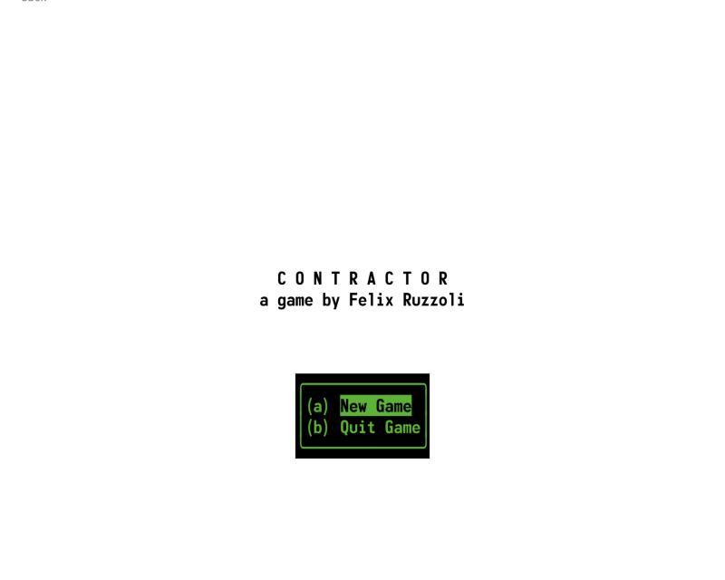
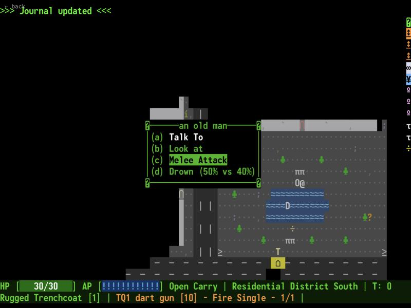

Contractor
Completion ▰▰▰▱▱▱▱▱▱▱ 30% · engine done, story and endings missing
Contractor is my attempt at the small, finished RPG I always wanted to play. Instead of a huge procedural wasteland, it has a few tightly packed places full of people, quests and awkward moral choices.
You are a contractor in The Dome, a city where megacorps like Bushido-ArmaTech sell you the cyberware drug "Meld" and offer to "sponsor" your unlicensed children. Every main quest can be solved by fighting, sneaking or talking. Dying is the only game over: fail a check and you live with what happens next. The world reacts to what you do, and the endings change with it.
It is written in Go with Ebiten and a CP437 tileset, and uses my own FOV, d100 rules, dungeon generator, dialogue scripting and a separate map editor (TextPainter).
Features
- A d100 rule system with skills, derived stats, aimed shots at body parts and crippling damage (
d100/). - A branching dialogue engine in recfile format with conditions, skill rolls and flags, e.g.
HasOutfit('business') && HasVisibleWeapon(). - The starter contract: collect $500 from a ripperdoc for "Jacob", with stealing, force, persuasion, freeing his ex-partner or going after the client as options.
- Ten city zones and corporate HQs (EBI, Bushido-ArmaTech, Project 21, Terra Vitae) as hand-made maps.
- Lockable, pickable and breakable doors, keypads you can hack with electronic lockpicks, containers, terminals.
- Ranged combat with aimed and burst fire, grenades and a rocket launcher, plus a large table of zap/projectile effects.
- In-world reading material: corporate pamphlets, news articles, a child-license statistic.
- Shopkeepers with stack-based trading, NPC chatter and player quips in several attitudes (snarky, respectful, aggressive…).
- Two front ends: a tcell terminal UI and an Ebiten renderer, now also built for the browser via wasm.
- A
validationtool that checks dialogues, skills and weapons and exits non-zero on errors.
Under the hood
Electronic lockpicks: skill can cut the number you burn by up to 90%, with the maths worked out in the comment. d100/globals.go
// skill can range from 0% to 200%.
// at 200% we want to have a 90% reduction in picks needed
skillFactor := float64(actorSkill) / float64(SkillCap) // 0.0 to 1.0
skillFactor = skillFactor * 0.9 // 0.0 to 0.9
picksNeeded := max(1, basePickCount-int(picksReducedBy))Aiming at body parts is a straight penalty table, Fallout style. Eyes are the hardest target. d100/bodypart.go
case Eyes:
return -60
case Head:
return -40
case Groin:
return -30Dialogue options gate on what you wear and carry, then roll a skill. From the client's dialogue, data_atom/dialogues/jacob_thorne.rec:
o_text: I represent some bigger third party. You better listen carefully now.
o_cond: HasOutfit('business') && HasVisibleWeapon()
o_test: RollSkill('social', 'Hard')
o_succ: CorporateSuccess
o_fail: CorporateFailHonest comments about the movement code, game/movement.go:
// THIS IS STILL HACKY; DOOR OBJECT ALSO IMPLEMENTS THISThere is a full win screen with cash and high scores in ui_console/core_shutdown.go, and a gameWon() in game/state_core.go, but nothing ever calls it and the win.txt it reads does not exist.
Ideas & inspirations
Fallout is everywhere. _notes/fallout_scope.txt is literally a checklist of "Fallout Core Features" marked DONE or missing, and _notes/tim_cain.txt collects Tim Cain's thoughts on what he would change: "Endslides should include all long-term consequences", a "Take all" button, removing Luck, first shot bulls-eye.
_notes/contractor.ideas.txt borrows hacking from Deus Ex, Watch Dogs and Vampire: The Masquerade, and wants believable reactions: walking into a police station covered in blood should matter, in a gang hideout it should not. Cool ideas still on the list: a zombie shooting range, an escape room and a "Spider Jerusalem Style Journalism Mission".
The world comes from _notes/story_beats.txt: a USA that closed its borders while the rest of the world drowned or burned, run by corporations like Eschaton Biotech and Bushido-ArmaTech, plus fashion brands like Void Atelier. _notes/contractor.manifest.txt sets the core rule: a contract ends fulfilled, broken, or with someone dead.
Where it started, where it ended
The first commit is from 7 April 2024, followed by "before experiments" and "before doing wild stuff". Mid-2024 there is even a commit named "fo2 data files", so the start was very much a Fallout-like engine. The README's design pillars aimed for a small but complete RPG with multiple endings and every main quest solvable by fighting, sneaking or talking.
What it became is a solid engine (rules, dialogue, maps, two renderers, an entity editor) with one fully branched starter quest, a city of maps and a lot of world text, but not yet the multi-quest story with endings.
State of the repo
Most of the work happened April 2024 to January 2025, ending in a run of "pushing a state before testing the entity editor" and "adding and fixing" commits. Later I came back for stack-based trading, a wasm browser build and a publish script.
_notes/todo_bugs.txt is long: mines don't work, rats don't aggro and can be pickpocketed, Jacob Thorne's map is referenced but deleted, "Take all" sometimes needs two tries. fallout_scope.txt lists sneaking, stealing, repair, quests, traps, crits and melee weapons as missing. The win path is wired but never triggered. Against the README's goal of a complete, completable game I'd put it around 30%.
Is it a real game?
Playable demo. You can die, and that is a real game over. There is no way to win: the ending code exists but is never reached. What you get is the starter contract with its many branches and a city to walk around in, which is maybe an hour or two of poking at things before the content runs out.
Screenshots



Latest updates
- 2025-01-29 Adding and fixing
- 2025-01-20 Entity editor work
- 2024-12-30 Removed some performance problems
- 2024-04-07 Initial commit